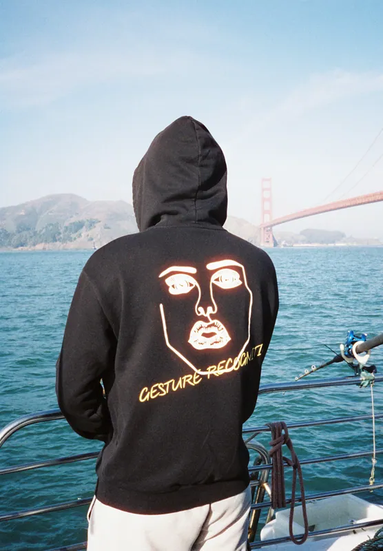
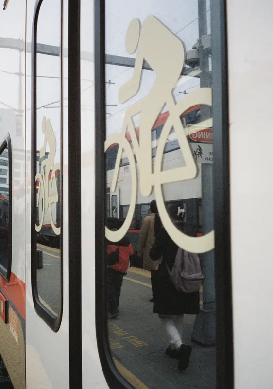
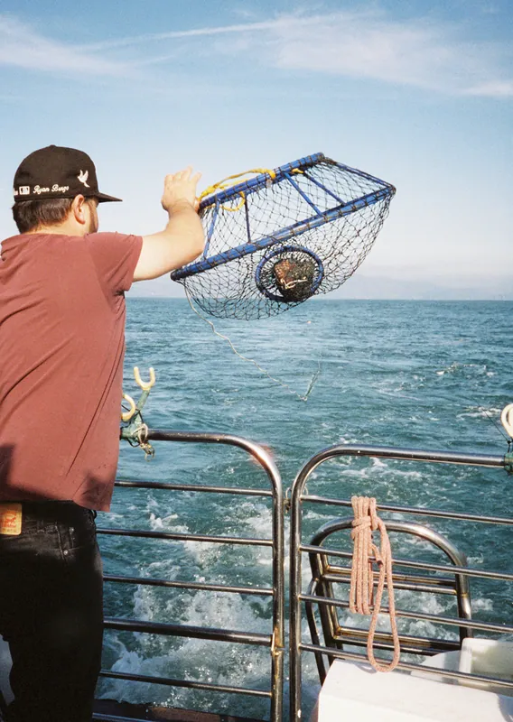
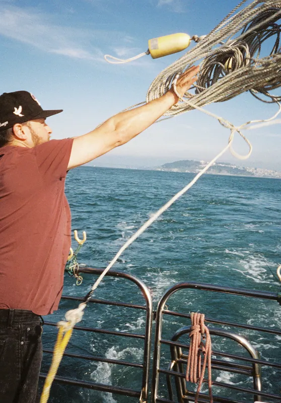
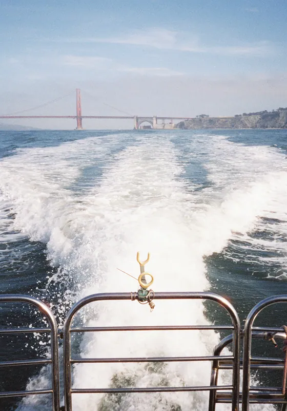
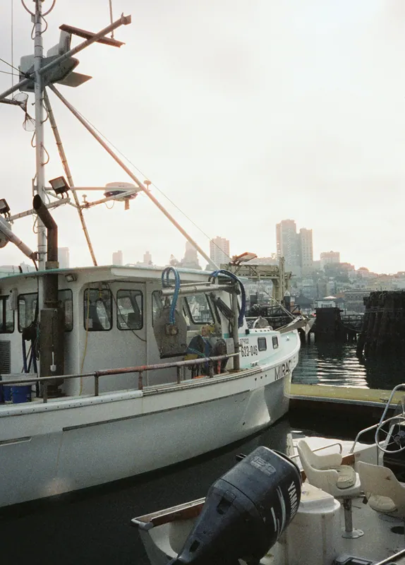
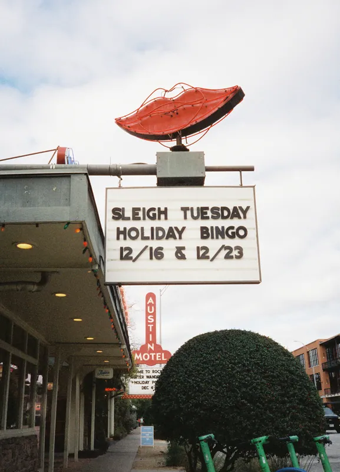
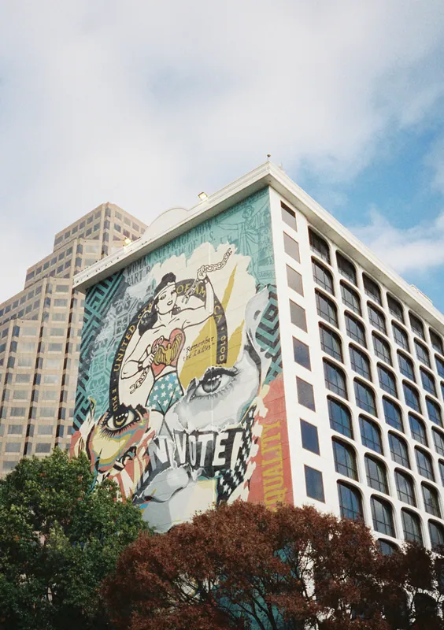

01Roll 676Bay Crossing · 过湾
半格18×24
78 帧 / 选 12
旧金山 · 奥斯汀
联系表整卷 78 帧点任意一格单独显影 · 显影后点开看片台 · 红框 = 选用
A01L01R02L02R03L03R04L04R05L05R06L06R
B07L07R08L08R09L09R10L10R11L11R12L12R
C13L13R14L14R15L15R16L16R17L17R18L18R
D19L19R20L20R21L21R22L22R23L23R24L24R
E25L25R26L26R27L27R28L28R29L29R30L30R
F31L31R32L32R33L33R34L34R35L35R36L36R
G37L37R38L38R39L39R
色彩分析COLOR
上：色相 × 饱和度，往外越浓下：红绿蓝三通道，左暗右亮
色Color Analyser色彩分析
78 格 · 每格取样约三万像素
一圈是色相，往外越浓
这一卷的颜色最集中在 橙（20°–50°），这一段占了全部有色像素的 45%。平均饱和度 0.24，平均明度 0.54。
最浓的一格是 676·03L，饱和度 0.57。在看片台里打开任意一格，点「分析」能看那一格自己的直方图。
移到色轮上看是哪个颜色

676·22R兜帽，看桥Caltrain从四号与国王街出站，车厢还是空的。半格的好处是不必省——月台、车门、玻璃上叠着的两层人影，一路都留下来了。
出海是下午的事。船绕到桥底，船尾的白浪把铁栏杆切成一段一段。抄网、抛绳、收线，这些动作在18×24毫米的竖幅里刚好装得下：一个人，和他面前的海。
后段换了地方。砖墙、壁画、霓虹，光从海面的白转成午后的黄。同一卷胶片里，天亮过一次，也暗过一次。

676·05R车门上的自行车676·05L月台，向南676·28R日落，鱼竿676·15R桥塔，仰视水把整座城翻过来，摆在船尾。卷 676

676·17L抄网
676·17R抛绳
676·16R船尾的白浪
676·12L渔船MIRACLE676·24R桥与船尾的浪
676·33LBINGO
676·35L壁画楼本卷共 78 帧版面选用 12 张，整卷见上方联系表。半格18×24，旧金山 · 奥斯汀。